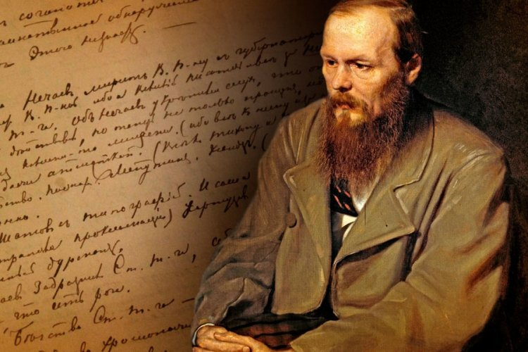

Alexander Pushkin began writing his first works at the age of seven. During his years at the Lyceum, he gained fame when he recited his poem to Gavrila Derzhavin. Pushkin was the first Russian writer to earn a living through literary work.
A Magic Moment I Remember
A magic moment I remember:
I raised my eyes and you were there,
A fleeting vision, the quintessence
Of all that's beautiful and rare
I pray to mute despair and anguish,
To vain the pursuits world esteems,
Long did I hear your soothing accents,
Long did your features haunt my dreams.
Leo Tolstoy is one of the most renowned writers and philosophers in the world. His views and convictions laid the foundation for an entire religious and philosophical movement known as Tolstoyanism.
War and Peace
“Here's my advice to you: don't marry until you can tell yourself that you've done all you could, and until you've stopped loving the women you've chosen, until you see her clearly, otherwise you'll be cruelly and irremediably mistaken. Marry when you're old and good for nothing...Otherwise all that's good and lofty in you will be lost.”
Fyodor Mikhailovich Dostoevsky is a classic of Russian and world literature and, according to UNESCO, one of the most widely read writers in the world. Fyodor Dostoevsky dreamed of becoming a writer from childhood.

Crime and Punishment

“I used to analyze myself down to the last thread, used to compare myself with others, recalled all the smallest glances, smiles and words of those to whom I’d tried to be frank, interpreted everything in a bad light, laughed viciously at my attempts ‘to be like the rest’ –and suddenly, in the midst of my laughing, I’d give way to sadness, fall into ludicrous despondency and once again start the whole process all over again – in short, I went round and round like a squirrel on a wheel.”